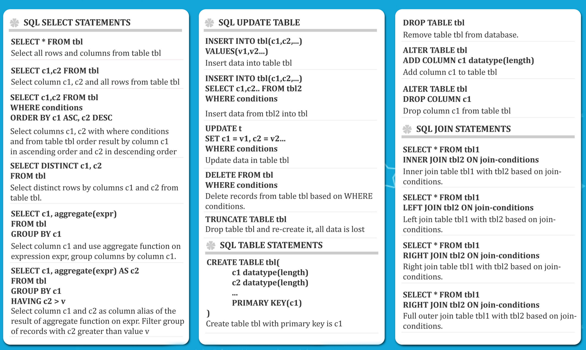
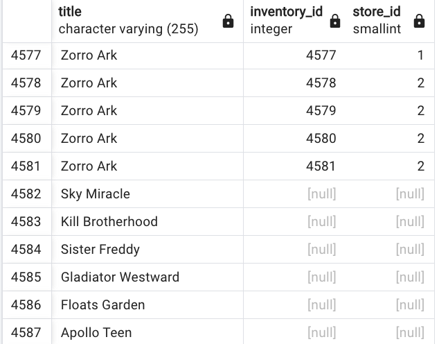

Database playground and CDC to kafka studies
info
Updated 8/20/2022 - postgres content
This repository supports simple studies for data base play (SQL, JPA) like db2, postgresql and mysql and change data capture to move data to kafka for example.
SQL basic

Examples of some basic commands applied to customers table.
select * from customers;
select distinct(name) from customers;
select count(distinct(rate)) from films;
-- how many customer has the name bob and older that 18
select count(*) from customer where name = 'bob' and age >= 18;
-- order on a column name
select name, salary from customers order by salary DESC;
-- limit the number of records returned
SELECT name, salary FROM customers ORDER BY salary DESC LIMIT 10;
-- BETWEEN
select count(*) from payment where amount between 8 and 9;
select * from payment where payment_date between '2007-02-01' and '2007-2-15';
-- IN to test value in a list of options
select count(*) from payment where amount in(0.99, 1.98, 1.99);
-- LIKE and ILIKE (case incensitive) to do pattern matching on string
select * from customer where first_name ilike 'J%';
-- Modify the table
alter table customers add column email varchar(100);
update customers set email='max@email.com' where id = 4;
-- Aggregate min, nax, abg, cont,...
select round(avg(replacement_code),3) from film;
-- GROUP BY combined with aggregate. Who is the customer spending the most
select customer_id, sum(amount) from payment group by customer_id order by sum(amount) DESC;
-- get the day with the most transactions
select DATE(payment_date), sum(amount) from payment group by DATE(payment_date) order by sum(amount) DESC;
-- HAVING to allow us to use the aggregate result to filter the result along with group by
select customer_id, sum(amount) from payment
where staff_id = 2
group by customer_id having sum(amount) >= 110;
See also postgres study for information to run SQL on a local postgresql started with docker compose.
Joins and more complex SQL
Join to group records from two tables. Global Inner join SQL structure looks like: build a projection of all elements in table A also present in table B. Get all columns of both table
SELECT * FROM table_a INNER JOIN table_b on table_a.column = table_b.column_b
- Get the top 10 customer name who do the most renting
select first_name, last_name, count(*) from payment
inner join customer
on payment.customer_id = customer.customer_id
group by first_name, last_name
order by count(*) desc limit 10;
-
OUTER JOIN: to deal with column only in one table
-- full outer join - customer never buy anything select * from customer full outer join payment on payment.customer_id = customer.customer_id where customer.customer_id IS null; -- set of records that are in the left table, present or not in the right select title, inventory_id, store_id from film left join inventory on film.film_id = inventory.film_id
-- film in catalog not in the inventory select title, inventory_id, store_id from film left join inventory on film.film_id = inventory.film_id where inventory_ID IS null -- get email address of customer leaving in california select district, email from customer join address on address.address_id = customer.address_id where address.district = 'California'
Exercises on the dvdrental database
See postgres to restore the database schema and data from the tar file.
-
How many payment transactions were greater than $5.00?
select count(*) from payment where amount > 5 -
How many actors have a first name that starts with the letter P?
* How many unique districts are our customers from?select count(first_name) from actor where first_name like 'P%';select count(distinct(district)) from address; -- Retrieve the list of names for those distinct districts select distinct(district) from address where district is not null and district != '' order by district asc; -
How many films have a rating of R and a replacement cost between $5 and $15?
* How many films have the word Truman somewhere in the title?select count(*) from film where rating = 'R' and replacement_cost between 5 and 15;* which staff member processes the biggest number of transactionselect count(*) from film where title ilike '%truman%';* what is the avg replacement cost per film ratingselect staff_id, count(amount) from payment group by staff_id;* Customer elligible for platinium status having more than 40 transactionsselect rating, round(avg(replacement_cost),2) from film group by rating;select customer_id, count(amount) from payment group by customer_id having count(amount) >= 40 ORDER by count(amount); -
Customer who spent more than 100$ with a given staff
select customer_id, sum(amount) from payment where staff_id = 2 group by customer_id having sum(amount) >= 100; -
what are the film with a given actor
select title,first_name, last_name from film_actor as fa inner join actor on actor.actor_id = fa.actor_id inner join film on fa.film_id = film.film_id where last_name = 'Wahlberg' and first_name = 'Nick' -
Film returned on a specific date: uses subquery, and joins
select film_id,title from film where film_id in (select inventory.inventory_id from rental inner join inventory on inventory.inventory_id = rental.inventory_id where rental.return_date between '2005-05-29' and ' 2005-05-30') ORDER BY title
Intermediate SQL
- Protect against null for value and substitute using COALESCE
select product, (price - coalesce(discount,0)) from products;
Play with timestamp
-- get the year of a date
select extract(year from payment_date) as myyear from payment;
-- can use month, quarter, month, day
-- get how old is a record
select AGE(payment_date) from payment;
--
select TO_CHAR(payment_date, "MM-DD-YYYY") from payment;
Mathematical functions
Compute things from columns. Examples from postgresql
- Get list of students who scored better than average grade
-- avg grade
select AVG(grade) from test_scores
-- solution with subquery
select student, grade from test_scrores
where grade > ( select AVG(grade) from test_scores);
Self-join
A query in which table is joined to itself: used to compare values in a column of rows within the same table. Need to use aliases. Get the employe's name and the name of his manager:
select emp.name, report.name as manager from employees as emp
join employees as report
on emp.emp_id = report.report_id
- find the films with the same length presented as pair
from f1.title, f2.title, f1.length from film as f1
inner join film as f2
on f1.film_id != f2.film_id and f1.length = f2.length
- Compare the various amounts of films per movie rating
select
sum(CASE rating
WHEN 'R' THEN 1
ELSE 0
END) as R,
sum(CASE rating
WHEN 'PG' THEN 1
ELSE 0
END) as PG,
sum(CASE rating
WHEN 'PG-13' THEN 1
ELSE 0
END) as PG13
from film
Add views
It is a stored query to be executed often.
create view customer_info as
SELECT ... -- the sql to repeat
Table creation
For primary key try to using numerical type and Postgresl sequence like:
CREATE TABLE players (player_id SERIAL PRIMARY_KEY, age smallint not null)
Use CHECK to put constraint on column and between column
hire_date DATE check (hire_date > birthday)
Alter table
-- drop a constraint
alter table people alter column name drop not null
Alter table in postgresql - doc
Common queries to clean data
Remove duplicates
-- search for same transaction
SELECT transaction_id, COUNT(transaction_id)
FROM Transaction__Table
GROUP BY transaction_id
HAVING COUNT(transaction_id) > 1;
--
Quarkus with panache and DB2
The project is inventory app and the interesting part is the property file
quarkus.datasource.username=cbm39816
quarkus.datasource.password=
quarkus.datasource.url=jdbc:db2://dashdb-txn-sbox-yp-dal09-03.services.dal.bluemix.net:50001/BLUDB:sslConnection=true;
quarkus.datasource.max-size=8
quarkus.datasource.min-size=2
quarkus.datasource.driver=com.ibm.db2.jcc.DB2Driver
quarkus.hibernate-orm.dialect=org.hibernate.dialect.DB2Dialect
quarkus.hibernate-orm.database.generation=drop-and-create
quarkus.hibernate-orm.database.default-schema=CBM39816
quarkus.hibernate-orm.log.sql=true
quarkus.hibernate-orm.sql-load-script=import.sql
quarkus.smallrye-openapi.path=/inventory/swagger
quarkus.swagger-ui.always-include=true
Postgresql
See dedicated note.
Setting CDC on those table
The Kafka connector is deployed as part of Strimzi.
TBC